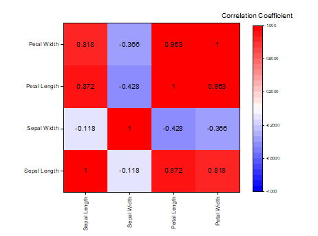

ラベル付きヒートマップ
Heatmap-Labels
- 
要求されるデータ
または、
グラフ作成
行列シートをアクティブにするか必要なデータをワークシート上で選択します。
メニューから「」を選択します。
または、
「3Dおよび等高線グラフ」ツールバーの「ラベル付きヒートマップ」ボタン をクリックします。
テンプレート
HEAT_MAP_WITH_LABELS.OTPU
ノート
このグラフは基本的なヒートマップと同じ方法で作成されますが、各ブロックにはラベルが付けられています。
- ヒートマップがXYワークシートデータから作成されるとき、デフォルトのラベルはビンカウントです。ヒートマップの緑の鍵アイコンをクリックしてパラメータの変更を選択し、計算する値を変更します。
- ヒートマップがXYZワークシートデータから作成されるとき、デフォルトのラベルは各ビンのZの平均値です。ヒートマップの緑の鍵アイコンをクリックしてパラメータの変更を選択し、計算する値を変更します。
- ヒートマップが仮想行列または行列から作成される場合、ラベルは各ブロックのZ値です（行と列の交点）。
- ヒートマップ上で数値ラベルをフォーマットするには（例えば、小数点以下の桁数を制御し、％として表示するなど）、プロットをダブルクリックしてプロットの詳細を開き、ラベルタブをクリックして数値表示フォーマットを設定します。